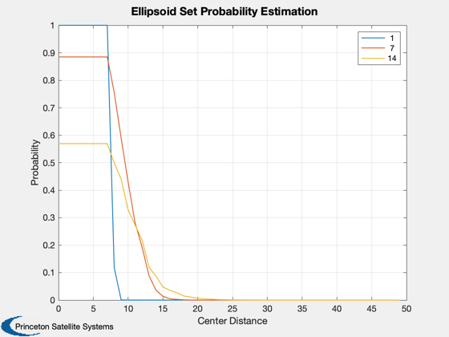

Set membership probability demo. Verify shape of function.
Since version 7.
------------------------------------------------------------------------
See also Plot2D, CollProbSet, Ellipsoid
------------------------------------------------------------------------
sig = 1;
S0 = diag([0.5 1 0.5]*sig).^2;
P0 = erf(sig/sqrt(2));
S1 = S0*200;
Ssc = eye(3)*3.5^2;
n = 40;
kP = 50;
scale = [1 7 14].^2;
P = zeros(length(scale),kP);
tE = P;
for j = 1:length(scale)
S1 = S0*scale(j);
for k = 1:kP
xc1 = [0;k-1;0];
tic
P(j,k) = CollProbSet( P0,S1,xc1,[],[],Ssc,n );
tE(j,k) = toc;
end
end
Plot2D([1:kP]-1,P,'Center Distance','Probability','Ellipsoid Set Probability Estimation')
legend(num2str(sqrt(scale')))
return
NewFig('Set Probability');
[u,s,v] = svd(S1);
semiAxes = sqrt(diag(s));
[x,y,z] = Ellipsoid(semiAxes, u, 19);
x = x + xc1(1);
y = y + xc1(2);
z = z + xc1(3);
s = surf(x, y, z);
set(s, 'EdgeColor', 'none', 'FaceColor', 'r');
hold on;
[u,s,v] = svd(Ssc);
semiAxes = sqrt(diag(s));
[x,y,z] = Ellipsoid(semiAxes, u, 19);
s = surf(x, y, z);
set(s, 'EdgeColor', 'none', 'FaceColor', 'g');
axis tight; axis equal; grid on
xlabel('X - zenith (m)')
ylabel('Y - along-track (m)')
zlabel('Z - cross-track (m)')
camlight left;
material shiny;
lighting phong;
view(3)
